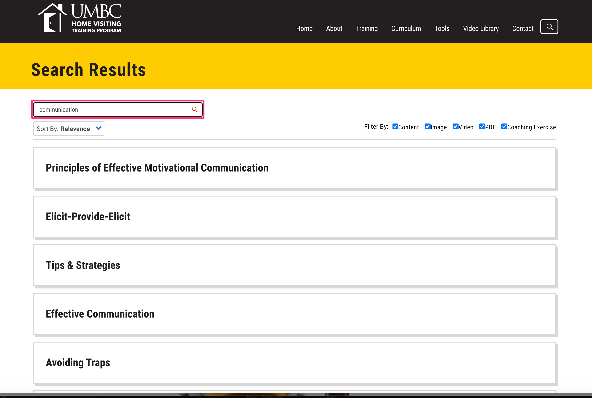
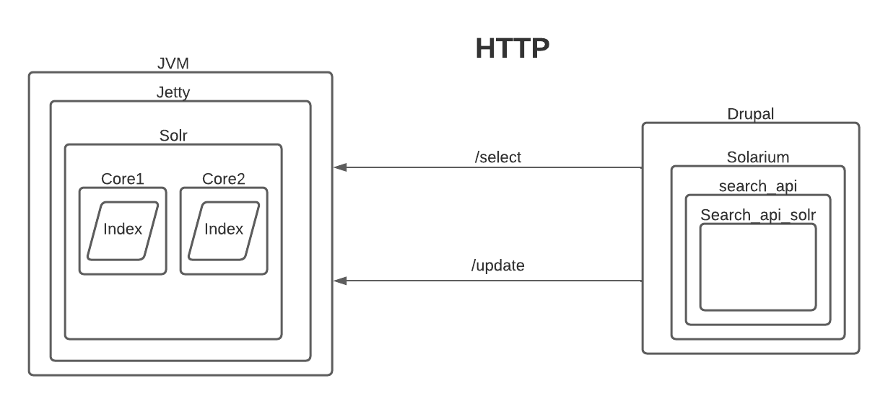
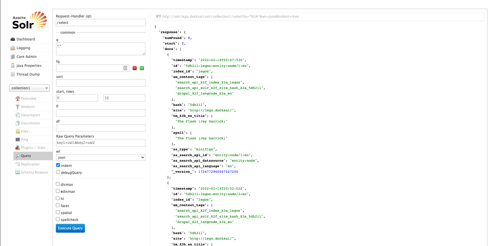
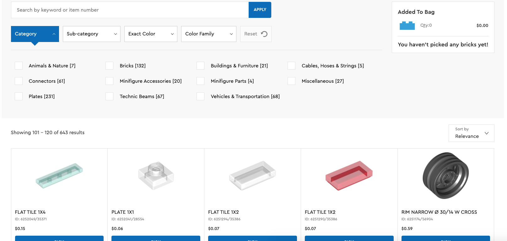

Find Exactly What You're Looking for With Solr

@aczietlow
Engineer Manager, MindgrubDrupal
Create at content management, and serving up that content
Searching out of the box
Let's look under the hood
SELECT * FROM sessions WHERE title = 'Composer Plugins 101';
Database Searches
SELECT * FROM sessions WHERE title = 'Composer Modules 101';
SELECT * FROM sessions WHERE title = 'Composer Plugin 101';
SELECT * FROM sessions WHERE title = 'Comopser Plugins 101';
0 Results found
Database Searches
SELECT * FROM sessions
WHERE title LIKE '%composer%'
AND title LIKE '%plugins%';
| Matches | No Matches |
|---|---|
|
|
Database Searches
SELECT * FROM sessions
WHERE title LIKE '%composer%'
OR title LIKE '%plugins%';
| Matches | No Matches |
|---|---|
|
|
Database Searches
SELECT * FROM sessions WHERE title = 'Composer Modules 101';
SELECT * FROM sessions WHERE title = 'Composer Plugin 101';
SELECT * FROM sessions WHERE title = 'Comopser Plugins 101';
0 Results
SELECT * FROM sessions
WHERE title LIKE '%composer%'
AND title LIKE '%plugins%';
Matched some results, but not as many as we had hoped
SELECT * FROM sessions
WHERE title LIKE '%composer%'
OR title LIKE '%plugins%';
Matched a lot of results, but computationally expensive
Limitations of Searching MySQL
Or any relational database
- Can mostly only do substring matching ('%composer%')
- Can't natively handle spelling mistakes
- Doesn't understand linguistic variations (developing and develop)
- Doesn't understand synonyms (developing and coding)
- Matches unimportant words ("an", "the", "a"
- Doesn't do relevancy of matched results
Limitations of Searching MySQL
SELECT * FROM sessions
WHERE title LIKE '%composer%'
AND title LIKE '%plugins%';
Scalability of this will become an issue as more rows are added to the database
Finding a better search tool: Solr
- Text Centric
- Read first
- Read way more often than created or updated. Not great for real time data store
- Document Oriented
- Designed for large data volumes
- Flexible Schema
Document-Oriented Storage
- Data of NoSql database
- Data Described as a collection of key:value pairs
- Ex of document are JSON, XML, PDF, etc
- Nodes can be expressed as a single document
{
"id": "home 1",
"location": "Charleston, SC",
"bedrooms": 3,
"type": "sale"
}
Flexible Schema
- Directly store documents of a similar nature
- Different approach than a relational Database
{
"id": "home 1",
"location": "Charleston, SC",
"mls": 1234566,
"bedrooms": 3,
"type": "sale"
}
{
"id": "home 2",
"location": "Summerville, SC",
"bedrooms": 3,
"type": "rent",
"rent": 1000
}
Drupal and Solr
Querying in Solr
q parameter
- "q" Query string
- syntax is `fieldName:value`
- * is a wildcard. So *:* will return all documents
- `fieldName` is optional
- Results returned are ranked by relevancy
fq parameter
- Filter Queries
- Are checks for inclusion or exclusion
- Has no effect on relevancy
- Fast to compute
- Use the syntax of `fieldName:value`
Sort
- Can specify field to sort by
- Syntax `fieldName asc`
- Defaults to relevancy
fl parameter
- Field list
- Syntax is comma separated list of fieldNames
- Useful to reduce the size of requests over the network
- "score" is a field option that is hidden by default
- "*,score" can be used to append the relevancy score to results
df
- Defined field
- Specify field to search the q param when q doesn't provide a field
wt
- writer type
- Formats of returns
- json, xml, python, ruby, php
Review
fq - limits of matching docs
q - limits of matching docs AND calculates relevancy score based on the query parser
Uses of fq
- Filter result of documents into smaller subsets
- Filtered based on machine data without user sanitized input
- Faster, can be cached on the solr layer
- Doesn't have to run through the query parser
faceted search
- Groups result documents in clusters or groups
- Provides direct user feedback
- Reduces "dead searches"
faceted search
Faceting Types
- Field Faceting
- Groups by specified fields
- Range Faceting
- Groups by Ranges, such as price or date ranges
- Query Faceting
- Groups by secondarily defined queries
Faceting Demos
Interacting with Facets
- It's up to Drupal's front end layer to present facets as links
- To see results of the facets, use an fq parameter based on the field or range from the facet
$client = new Solarium\Client($adapter, $eventDispatcher, $config);
// get a select query instance
$query = $client->createSelect();
// apply settings using the API
$query->setQuery('*:*');
$query->setStart(2)->setRows(20);
$query->setFields(array('id','title','set', 'price'));
$query->addSort('price', $query::SORT_ASC);
// create a filterquery using the API
$fq = $query->createFilterQuery('maxprice')->setQuery('price:[1 TO 300]');
// create a facet field instance and set options using the API
$facetSet = $query->getFacetSet();
$facet = $facetSet->createFacetField('stock')->setField('inStock');
// this executes the query and returns the result
$resultset = $client->select($query);
// display the total number of documents found by Solr
echo 'NumFound: '.$resultset->getNumFound();
// display facet counts
echo 'Facet counts for field "inStock":';
$facet = $resultset->getFacetSet()->getFacet('stock');
foreach ($resultset as $doc) {
| id | title | set | price |
| $doc->id; | $doc->title | $doc->set | $doc->price |
}
Text Analysis
Stop Word Filters
- Removes common words from search input
- "on", "a", "an", "from"
Text Analysis
Stem Filters
- Doesn't need to enter exact form a query term
- handles singular and plural versions of words
- legos == logo, bricks == brick
- Can transform various conjugations into a base term
- running, ran, runs == run
- requires a dictionary file to perform this kind of look ups
Text Analysis
Word Delimiter Graph Filter
- Can split words based on a specified delimiters
- by character: wi-fi == wifi
- by CamelCase: DrupalCoreTests == "drupal", "core", "test"
Text Analysis
There's a lot more available in the documentation
Solr Filter DescriptionsTHE END
- Solr is awesome
- Solr Documentation
- Solarium Docs
- Follow me on twitter: @aczietlow